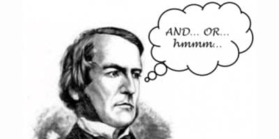

George Boole’s most remarkable accomplishment is considered by most to be the invention of Boolean Algebra, but he made many other contributions to mathematics such as contributions to invariant theory, which was later applied to Einstein’s General Relativity. George Boole contributed much to the philosophy of mathematics, as well as the philosophy of science. His personal philosophy reflects a view of rationalism, a bias towards placing reason as the motivator for all science and math, a view which is also reflected in the structure of Boolean Algebra. Perhaps most astounding was that George Boole accomplished all this by mostly teaching himself not only advanced mathematics but 6 languages. George Boole only received basic tutoring from a local bookseller at a young age, and he never attended a university. At 16, he became an assistant teacher at Doncasterat Heigham's School. His greatest desire was to provide for his poor family of shoemakers, and he desired to join the clergy, yet his parents persuaded him to become a teacher. After almost entirely teaching himself, Boole opened up his own school in Lincoln at the age of 19, and corresponded with mathematicians and read their works to become well-versed in math. In 1849, at the age of 34, Boole became the first professor of Mathematics at Queen’s College, Ireland. In 1855, Boole married Mary Everest, together, they had 5 children and 5 grandchildren, several of which themselves went on to become physicists and mathematicians. 2 of their grandchildren worked on the Manhattan Project to develop the first atomic weapons. George Boole lived an impactful but short life, at 49, on the 8th of December, 1864, George Boole died of pneumonia after giving a lecture in the rain a week prior. Today, he is not forgotten. In addition to the boolean data types featured in programming languages, a crater on the moon is named “Boole” after him. George Boole was born to a modest family, but he certainly accomplished much in his modest life. In our modern era, it is clear that Boole’s work was influential. One might ask, could Boole have even comprehended the influence his work had? Boole’s vision of his work was a synthesization of logic and math, but it’s application to the hardware and software of virtually every electronic device is something, that perhaps the brilliant mathematician did not even dream of, or anticipate. It’s hard to say if computer science itself could exist if Boolean Algebra was never invented, but it surely would not be the same.
